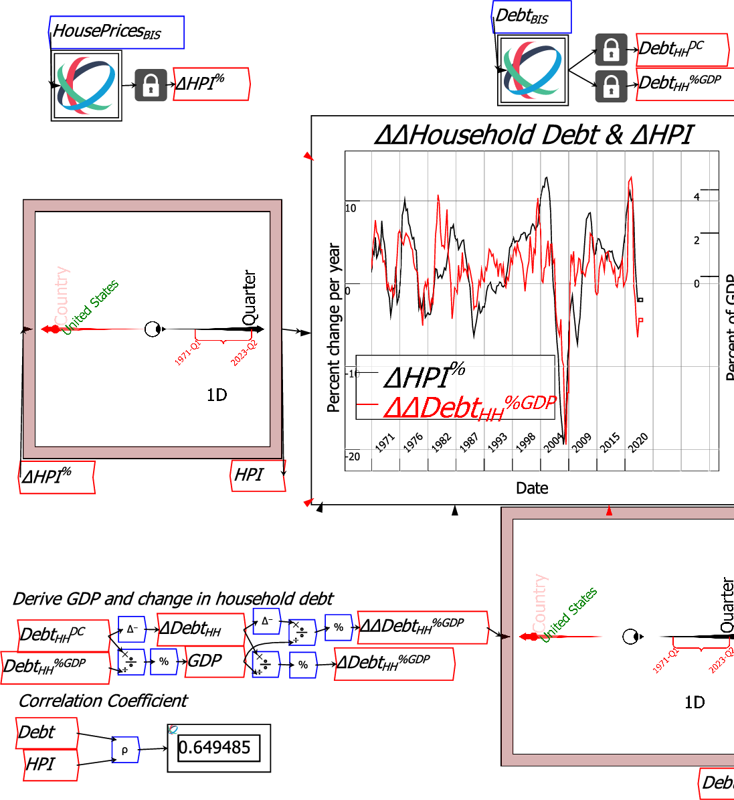

When Ravels share dimensions, it is possible to link them together so that what is done to one Ravel--plotting, selecting data, rotating axes, etc.--is done to the other Ravel. This is very useful when you wish to examine relations between different sets of data.
Ravels are linked by dragging the mouse to select the desired Ravels, then choosing ``Link selected Ravels'' from the context menu when the mouse is hovering over the canvas.
In the next figure, the two Ravels whose borders are highlighted in brown have been linked. When the country ``United States'' is chosen for the Ravel containing house price data, the same selection is made for the Ravel containing household debt data. The plot and the regression analysis therefore compare United States house price changes to the change in the change in household debt.

When the selector dot for Country is moved to another country, the graph and the correlation result for household debt and house prices for that country replaces the information shown for the USA.
![\includegraphics[width=\textwidth]{images/RavelLinking2ndCountry}% WIDTH=555 HEIGHT=579](img275.png)
Linking can be refined using the context menu for Ravels--rather than for the canvas. If your mouse is over one of the selected Ravels rather than the canvas, the context menu option is ``Lock specific handles''. That brings up the detailed lock menu:

It is thus possible to turn on or off selecting of the same slices, arrow orientation, calipers and sort order if desired, while still linking the Ravels on other characteristics.